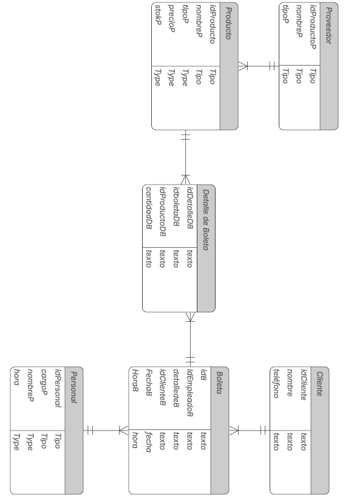

Las bases de datos organizan información clave en negocios. Este taller desarrolla el modelo conceptual para un carrito cafetero, identificando las entidades principales: clientes, productos, ventas, proveedores y personal. Se analizaron requerimientos y relaciones para construir el Diagrama Entidad-Relación (DER) en Lucidchart.
Mediante análisis de procesos (ventas, atención, abastecimiento) se definieron seis entidades: Cliente, Personal, Proveedor, Producto, Boleta, DetalleBoleta. Se establecieron sus vínculos con cardinalidades 1:N, representadas en el DER mostrado más abajo.
⚡ todas las relaciones son 1:N (uno a muchos)
